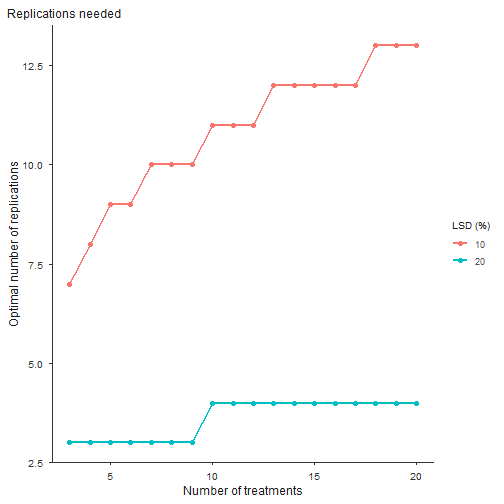

trialSize provides tools for experimental design sizing in agricultural research. It implements several methods for estimating the optimal plot size from uniformity trial data, and for estimating the optimal number of replications, with standardized diagnostic statistics and plots:
-
fit_lrp(): optimal plot size via the Linear Response Plateau model (Paranaiba, Ferreira & Morais, 2009) -
fit_qrp(): optimal plot size via the Quadratic Response Plateau model (Peixoto, Faria & Morais, 2011) -
fit_mcm(): optimal plot size via the Modified Maximum Curvature method (Meier & Lessman, 1971) -
calc_paranaiba(): optimal plot size via the Paranaiba method (Paranaiba, Ferreira & Morais, 2009) -
calc_replicates(): optimal number of replications (Cargnelutti Filho et al., 2014)
fit_lrp(), fit_qrp() and fit_mcm() share the same interface (numeric vectors, or a data frame with a trial column) and take CV values already computed for several plot sizes. calc_paranaiba() is different: it works directly on the raw grid of basic experimental units and returns a closed-form estimate. All of them return standardized statistics and publication-style plots that can be saved to TIFF, PDF or PNG.
Installation
You can install the development version of trialSize from GitHub with:
# install.packages("pak")
pak::pak("willyanjnr/trialSize")Example
A basic uniformity-trial workflow: fit a Linear Response Plateau model to coefficient of variation data across plot sizes, and inspect the estimated optimal plot size. The breakpoint is found by a grid search, so no starting values are needed.
library(trialSize)
# Example uniformity trial data: CV (%) decreasing with plot size
plot_size <- c(1, 2, 4, 6, 8, 10, 15, 20, 25, 30)
cv <- c(22.1, 18.4, 14.2, 11.8, 10.1, 9.3, 8.1, 7.6, 7.4, 7.3)
fit <- fit_lrp(x = plot_size, cv = cv)
fit
#> Linear Response Plateau (LRP) fit
#> Method: segment
#> Breakpoint (Xo): 8.648
#> CV at breakpoint: 7.940
#> R2: 0.963 RMSE: 0.935 AIC: 35.0 BIC: 36.3
#>
#> Local minima of the SSE profile (7):
#> Xo = 7.395 SSE +7.1% vs optimum *
#> Xo = 10.059 SSE +40.2% vs optimum
#> Xo = 5.999 SSE +103.9% vs optimum
#> ... see $local_minima for all
#> * fits within 10% of the optimum (local_min_tol); breakpoint not sharply identifiedThe plot title (and other options) go on the plot() method, which draws the fitted broken line, the breakpoint, and the plateau-model annotations in the layout commonly used in plot-size articles:
plot(fit, title = "Uniformity trial example")
To export a figure, use save = TRUE; TIFF is written with LZW compression, and vector formats are available for line art:
plot(fit, title = "Uniformity trial example",
save = TRUE, file = "trial.tiff", format = "tiff", dpi = 300)Comparing plot-size methods
The three CV-based methods are called the same way and often give different optima. The optimal plot size typically increases in the order MCM < LRP < QRP:
lrp <- fit_lrp(plot_size, cv)
qrp <- fit_qrp(plot_size, cv)
mcm <- fit_mcm(plot_size, cv)
data.frame(
method = c("MCM", "LRP", "QRP"),
Xo = c(mcm$parameters["Breakpoint"],
lrp$parameters["Breakpoint"],
qrp$parameters["Breakpoint"]),
CVxo = c(mcm$parameters["Breakpoint_Response"],
lrp$parameters["Breakpoint_Response"],
qrp$parameters["Breakpoint_Response"]),
row.names = NULL
)
#> method Xo CVxo
#> 1 MCM 4.142012 13.544829
#> 2 LRP 8.648000 7.940117
#> 3 QRP 12.311000 7.766405Because every plot() method returns a ggplot object, the three fits can be shown side by side with patchwork:
library(patchwork)
plot(mcm, title = "MCM", label_size = 3) +
plot(lrp, title = "LRP", label_size = 3) +
plot(qrp, title = "QRP", label_size = 3)
Several trials at once
Pass a data frame and the column names to fit one model per trial. The result carries a per-trial summary table plus the individual fits (this works for fit_lrp(), fit_qrp() and fit_mcm()):
trials <- rbind(
data.frame(plot_size, cv, trial = "Trial A"),
data.frame(plot_size, cv = cv + 1.5, trial = "Trial B")
)
res <- fit_lrp(trials, x = "plot_size", cv = "cv", trial = "trial")
#> Using x = 'plot_size', cv = 'cv', trial = 'trial' -> 2 trials.
res$summary
#> trial a b breakpoint plateau R2 RMSE AIC BIC
#> 1 Trial A 22.2884 -1.6591 8.648 7.9401 0.9628 0.9354 35.043 36.253
#> 2 Trial B 23.7884 -1.6591 8.648 9.4401 0.9628 0.9354 35.043 36.253
#> n_local
#> 1 7
#> 2 7If the optimum is known to lie in a given region, restrict the breakpoint search with search_range, for example fit_lrp(x = plot_size, cv = cv, search_range = c(5, 20)).
The Paranaiba method
calc_paranaiba() starts from the raw uniformity trial: a grid of basic experimental units. It estimates the first-order spatial autocorrelation along a serpentine walk and returns the optimal plot size in closed form. Supply one matrix, a list of matrices, or a long data frame with row and column indices:
set.seed(42)
grid_a <- matrix(rnorm(36, mean = 250, sd = 55), nrow = 6)
grid_b <- matrix(rnorm(36, mean = 300, sd = 80), nrow = 6)
par_fit <- calc_paranaiba(list(`Trial A` = grid_a, `Trial B` = grid_b))
#> Paranaiba method on 2 trial(s); rho direction = 'row'.
par_fit
#> Paranaiba optimal plot size
#> Trials: 2 | rho direction: row | invalid: 0
#>
#> trial mean variance CV rho_row rho_col rho Xo CVxo valid
#> Trial A 253.716 4408.216 26.169 -0.163 -0.224 -0.163 5.109 11.423 TRUE
#> Trial B 300.502 6476.482 26.781 0.141 -0.032 0.141 5.200 11.627 TRUE
#>
#> Mean Xo: 5.15 | Mean CVxo: 11.53The walk follows the rows by default, as in the original method; use rho_direction = "col" or "mean" for the alternatives.
plot(par_fit, title = "Paranaiba: optimal plot size")
Number of replications
The CV at the optimal plot size feeds directly into the number of replications needed to detect a given difference between treatment means (as a percent of the mean), for CRD or RCBD designs:
cvxo <- unname(lrp$parameters["Breakpoint_Response"])
reps <- calc_replicates(
treatments = 3:30,
cv_percent = cvxo,
lsd_percent = c(10, 20, 30),
design = "CRD"
)
reps
#> Optimal number of replications
#> Design: CRD CV: 7.94% alpha: 0.05
#> Rows: 84 | Non-converged: 0
#>
#> Treatments CV_percent LSD_percent Alpha Design r_continuous r_optimal df_error
#> 3 7.940117 10 0.05 CRD 8.01 9 24
#> 4 7.940117 10 0.05 CRD 9.23 10 36
#> 5 7.940117 10 0.05 CRD 10.17 11 50
#> 6 7.940117 10 0.05 CRD 10.93 11 60
#> 7 7.940117 10 0.05 CRD 11.58 12 77
#> 8 7.940117 10 0.05 CRD 12.15 13 96
#> q_tukey converged at_floor
#> 3.532 TRUE FALSE
#> 3.809 TRUE FALSE
#> 4.002 TRUE FALSE
#> 4.163 TRUE FALSE
#> 4.282 TRUE FALSE
#> 4.382 TRUE FALSEThe output reports both r_continuous (the tabulated value) and r_optimal (the practical integer, at least 2). Plotting shows how the requirement grows with the number of treatments, one line per LSD level:
plot(reps, title = "Replications needed")